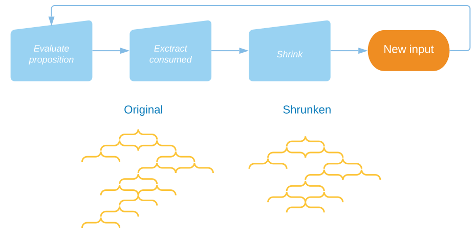

How it works
Popper is designed to facilitate property-based testing, where regular unit tests are just special cases. It's inspired by a technique introduced by the Python library Hypothesis.
The fundamental difference between libraries based on the original property-based testing framework, QuickCheck, has to do with how sample generation and shrinking work.
In QuickCheck-based libraries, there are two orthogonal concepts:
- Generators — for generating arbitrary test data (samples).
- Shrinkers — for simplifying values that results in failing tests.
For any custom data-type you wish to sample, you need to provide a generator as well as a shrinker (or no shrinking is applied). Further, any invariant — with respect to how samples are generated — must also be reflected in the shrinker.
In Popper and Hypothesis, shrinking is generic and never violates any invariants embedded in the generators. This eliminates the hassle of defining shrinkers and keeping them in synch. The downside is that it may be less efficient and doesn't always produce optimally shrunken results.
Sampling and shrinking
A sampler, in Popper, is a value of some type a Sample.t and corresponds to
a generator in QuickCheck.
When an a Sample.t value is run, it consumes input from a sequence of int32
values. Each number is used for guiding some decision or for parsing a primitive
value.
Here's a high-level depiction of what is involved in running a test:

All the numbers consumed from the input stream are recorded and tagged in order to provide some information about the different sub-segments of the input. In fact, the consumed data is arranged in a tree structure. This makes it easier for the shrinker to modify the tree by either removing sub-branches or shrinking the leaves. The tree can be collapsed into a flat structure and converted back to a new input-stream, which in turn is fed to the sampler.

An example
To look at a concrete example, below is dummy-test for illustrating how sampling
and shrinking really works. The code introduces a new data-type, contact, for
which a sample function is derived. The function test samples a contact
value and returns a proposition that fails for any sample produced by the Mail
constructor. The derived sample function contact_sample is enhanced with
logging and also returns the consumed input, via the function
Sample.with_consumed. Additionally the sampler is resized* to 10 so that
small — but not too small values — initially:
open Popper
open Sample.Syntax
type contact =
| Email of string
| Mail of
{ street : string
; number : int option
; zip : string
}
[@@deriving show, ord, popper]
let test () =
let* contact, consumed =
contract_sample
|> Sample.resize 10
|> Sample.with_log "contact" pp_contact
|> Sample.with_consumed
in
Format.printf "%a@.%a@." Consumed.pp consumed pp_contact contact;
match contact with
| Email _ -> pass
| Mail _ -> fail "Expected email"
let () = check test
Each sampled contact value and consumed input pair is also printed.
When run, we can see how the samples are produced and what the consumed data
looks like. That is the the data in the input-stream fed to the sampler.
The first consumed input and corresponding contact pair is:
0 1303638800
1 name[street]-1,list-2,sub-list-3,choice-4 875735887
2 name[street]-1,list-2,sub-list-3,name[element]-5,char-6 1313326574
3 name[street]-1,list-2,sub-list-3,sub-list-7,choice-8 1489071124
4 name[street]-1,list-2,sub-list-3,sub-list-7,name[element]-9,char-10 146106767
5 name[street]-1,list-2,sub-list-3,sub-list-7,sub-list-11,choice-12 620372157
6 name[street]-1,list-2,sub-list-3,sub-list-7,sub-list-13,choice-14 1449571827
7 name[street]-1,list-2,sub-list-3,sub-list-15,choice-16 398247927
8 name[number]-17 154391388
9 name[zip]-18,list-19,sub-list-20,choice-21 877744873
10 name[zip]-18,list-19,sub-list-20,name[element]-22,char-23 113482031
11 name[zip]-18,list-19,sub-list-20,sub-list-24,choice-25 2102918577
12 name[zip]-18,list-19,sub-list-20,sub-list-24,name[element]-26,char-27 352979668
13 name[zip]-18,list-19,sub-list-20,sub-list-24,sub-list-28,choice-29 1423603695
14 name[zip]-18,list-19,sub-list-20,sub-list-24,sub-list-30,choice-31 2122464862
15 name[zip]-18,list-19,sub-list-20,sub-list-32,choice-33 279715071
Run.Mail {street = "Ni"; number = None; zip = "wV"}
This happened to be a Mail contact why the proposition returned failed. Now,
shrinking kicks in, in order to find a smaller input sequence for which the test
still fails. The algorithm for shrinking takes into account the tagged information.
It's a search procedure where at at each step an attempt to either
- Decrease some value from the input sequence.
- Remove some blocks of values.
Decreasing could mean changing the input that resulted in character N to be
a and removing blocks might result in removing some elements from a list.
When it comes to removing, the tagging of the input is important as it gives
hints to where candidates for removing feasible subsections are encountered.
Randomly removing data is likely to drastically alter the resulting sample.
For every shrink step, the sample function is run again in order to verify that the sampled data still yields a failed proposition. The algorithm never looks at the sampled values themselves. It only notices whether or not shrinking was successful. The key to shrinking is that sampler are designed such that a shorter and smaller input implies smaller sampled values.
Since we're printing each invocation of the test function, we can observe
each shrink attempt. Here are a few of the intermediate ones:
0 1303638800
1 name[street]-1,list-2,sub-list-3,choice-4 875735887
2 name[street]-1,list-2,sub-list-3,name[element]-5,char-6 1313326574
3 name[street]-1,list-2,sub-list-3,sub-list-7,choice-8 1489071124
4 name[street]-1,list-2,sub-list-3,sub-list-7,name[element]-9,char-10 0
5 name[street]-1,list-2,sub-list-3,sub-list-7,sub-list-11,choice-12 398247927
6 name[street]-1,list-2,sub-list-3,sub-list-7,sub-list-13,choice-14 77195694
7 name[street]-1,list-2,sub-list-3,sub-list-15,choice-16 877744873
8 name[number]-17 0
9 name[zip]-18,list-19,sub-list-20,choice-21 2102918577
10 name[zip]-18,list-19,sub-list-20,name[element]-22,char-23 352979668
11 name[zip]-18,list-19,sub-list-20,sub-list-24,choice-25 1423603695
12 name[zip]-18,list-19,sub-list-20,sub-list-24,name[element]-26,char-27 2122464862
13 name[zip]-18,list-19,sub-list-20,sub-list-24,sub-list-28,choice-29 0
14 name[zip]-18,list-19,sub-list-20,sub-list-24,sub-list-30,choice-31 0
15 name[zip]-18,list-19,sub-list-20,sub-list-32,choice-33 0
Run.Mail {street = "N0"; number = None; zip = "00"}
...
0 1303638800
1 name[street]-1,list-2,sub-list-3,choice-4 0
2 name[number]-5 0
3 name[zip]-6,list-7,sub-list-8,choice-9 2102918577
4 name[zip]-6,list-7,sub-list-8,name[element]-10,char-11 0
5 name[zip]-6,list-7,sub-list-8,sub-list-12,choice-13 2122464862
6 name[zip]-6,list-7,sub-list-8,sub-list-12,name[element]-14,char-15 0
7 name[zip]-6,list-7,sub-list-8,sub-list-12,sub-list-16,choice-17 0
8 name[zip]-6,list-7,sub-list-8,sub-list-12,sub-list-18,choice-19 0
9 name[zip]-6,list-7,sub-list-8,sub-list-20,choice-21 352979668
...
Run.Mail {street = ""; number = None; zip = "00"}
0 1303638800
1 name[street]-1,list-2,sub-list-3,choice-4 0
2 name[number]-5 0
3 name[zip]-6,list-7,sub-list-8,choice-9 0
(Run.Email "0")
...
0 0
1 name[x0]-1,list-2,sub-list-3,choice-4 875735887
2 name[x0]-1,list-2,sub-list-3,name[element]-5,char-6 1313326574
3 name[x0]-1,list-2,sub-list-3,sub-list-7,choice-8 0
4 name[x0]-1,list-2,sub-list-3,sub-list-9,choice-10 77195694
Run.Mail {street = "N"; number = None; zip = ""}
As seen, sometimes the shrink step fails and results in a valid test. Eventually, in this case, the input is shrunken down to the following sequence:
0 1303638795
1 name[street]-1,list-2,sub-list-3,choice-4 0
2 name[number]-5 0
3 name[zip]-6,list-7,sub-list-8,choice-9 0
Run.Mail {street = ""; number = None; zip = ""}
And the final counter-example is displayed: